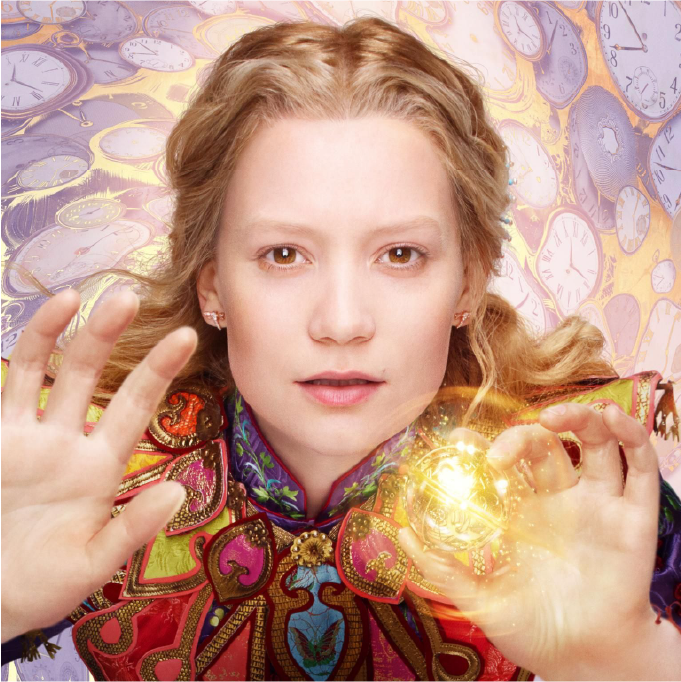
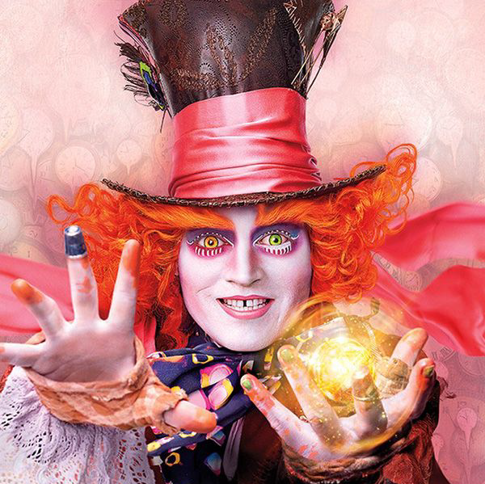
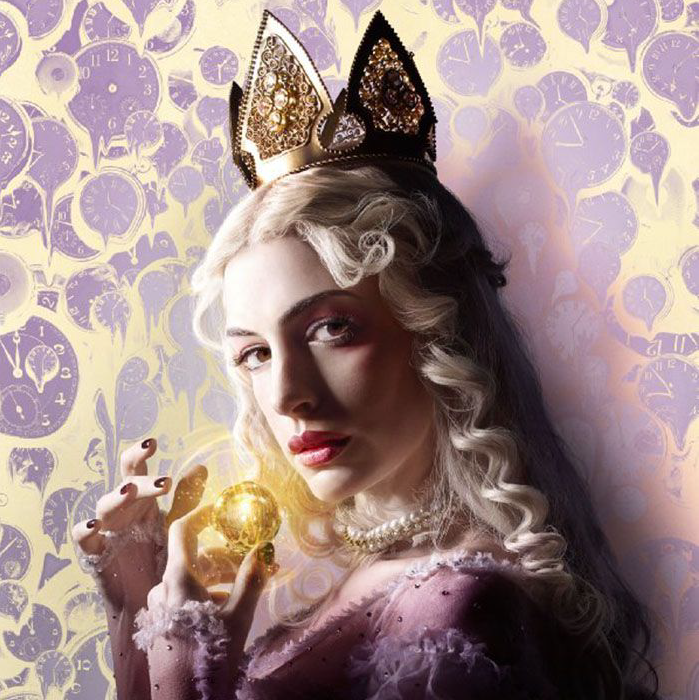
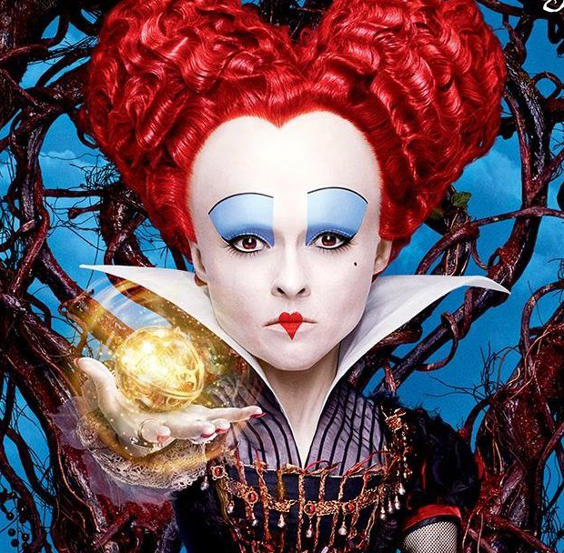
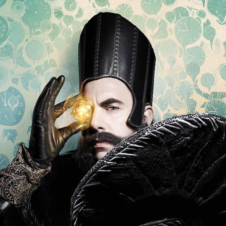
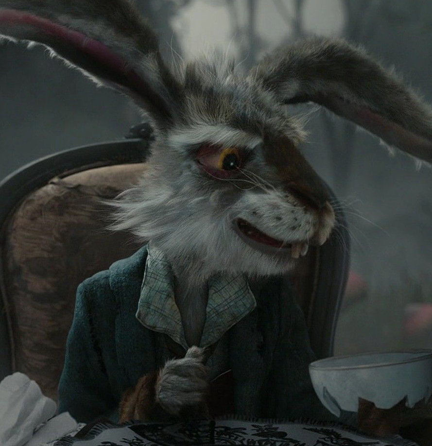
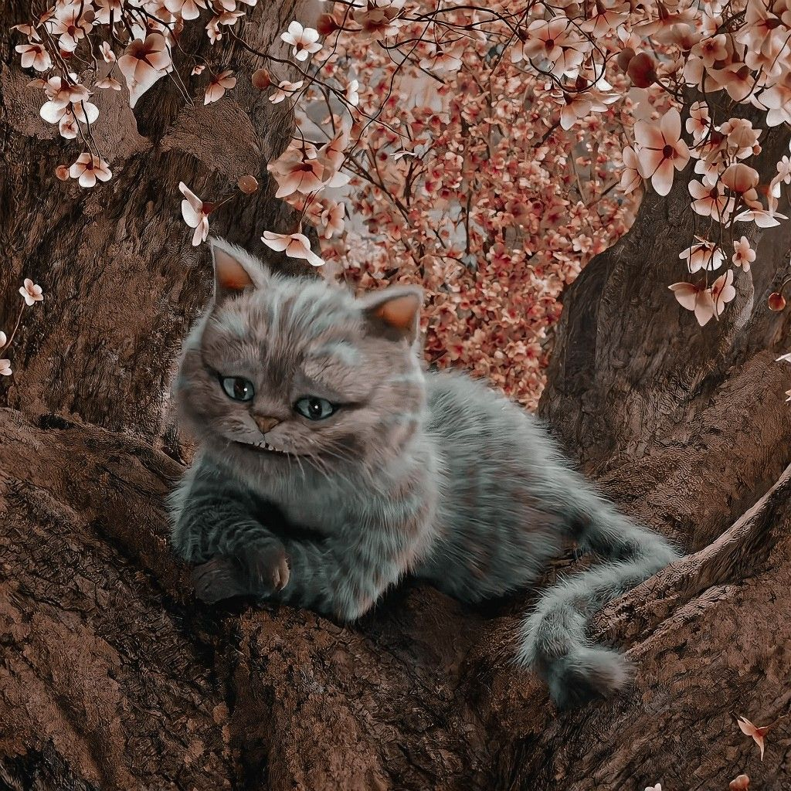
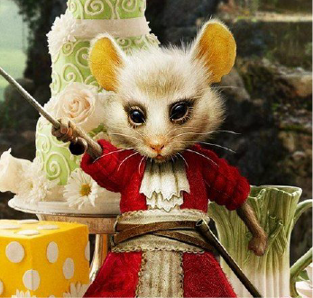
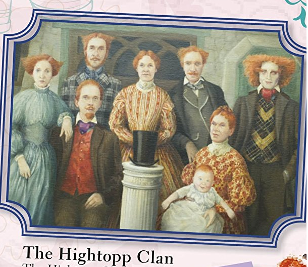

ALICE THROUGH LOOKING GLASS
PERSONAJES PRINCIPALES

ALICIA
Su nombre completo es Alicia Kingslei quien al regresar de sus viajes en alta mar encontrara un espejo el cual la llevara a infratierra donde se le confia allar la muchosidad del Sombrerero Loco, al mismo tiempo que su familia cree que se ha vuelto loca y devido a esto estaran por cometer una verdadera locura.
EL SOMBRERERO
Su nombre es Terrence Hightopp, apodado como el Sombrerero Loco es el mejor amigo de Alicia quien ha perdido su muchosidad para recuperarla pedira a Alicia recuperar a su familia.
REINA BLANCA
Su nombre es Mirana ella es la gobernatante de Infratierra,es quien mandara a traer a Alicia pues es la unica quien podria regresar la muchosidad del Sombrerero al igual que le pedira interferir en los malvados planes de su hermana la Reina Roja.
REINA ROJA
Su nombre es Iracebeth la Reina Roja o Reina de Corazones en esta entrega siendo una protagonista tendra al Tiempo de su lado, sus planes son ademas de reinar Infratierra en el pasado, presente y futuro quiere cambiar su pasado para que su plan salga a la perfeccion.
TIEMPO
Considerado un ser opmnipotente, vive en el gran reloj su deber es cuidar que todo ocurra a su tiempo, alicia irá busca de su ayuda para salvar a su amigo y a la familia desu mejor amigo, sin embargo recordemos que este esta a los pies de Iracebeth ¿Estara dispuesto a ayudar?.PERSONAJES SECUNDARIOS

LIEBRE DE MARZO

CHESHIRE

MALLYMKUM

TWEEDLEDUM Y TWEEDLEDEE
